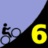
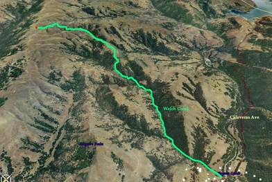

|  |
2007 Low-Key Hillclimbs Week 6: Welch Creek 03 Nov 2007 |
|  |
| Aerial photo of Welch Creek, courtesy of Stanford Cycling |
Some things are better left undiscovered.
During the 2006 series, when faced with gale-force winds on the Diablo Summit, the Low-Key committee was contemplating a potential alternative climb. One rider, who shall for purposes of this discussion be known as RB, suggested Welch Creek. Welch Creek? A faint recollection of a street sign, a lonely detour long ignored, a side route from spectacular Calaveras Road.
RB suggested Welch Creek is possibly the toughest long climb in the Bay Area. Tougher than Bohlman-On Orbit..
Tougher than Bohlman-On Orbit? Impossible. Providence would never allow it! Has humanity shrunk to such a depth of despair that such horrors should upon it be inflicted? How much pain are we condemned to suffer?
Yet the challenge was issued. The knowledge was learned. The winds on Diablo's summit subsided, but our fate had been sealed. The Low-Key Hillclimbs would go to Welch Creek.
If you have been there, then you know, you know what is in store, no matter how deeply the memory has been justifiably suppressed. Yet for those who have not, doesn't the joy of discovery make the challenge all the riper? The experience all the purer? The accomplishment all the greater?
We'll see you there....
Our insurance demands it: helmets are required. Sorry kids, no exceptions!
revised: Staging will take place at the Sunol Glen School parking lot, located at the intersection of 11601 Main Street in Sunol (ride directions from Union City BART). We'll have a key to access bathroom facilities and a water fountain at the school. To reduce congestion, please try to park away from the school in downtown Sunol. At 10:10am, we'll begin a low-key 4-mile ride to the intersection of Welch Creek Road and Calaveras Rd, where the real fun begins!
Two things to keep in mind this week:
See you on Saturday!
| stats | 3.9 miles, 1923 ft, 9.3% |
| format | mass start |
| time | reg 9:15 - 10:00 start 10:10am |
| coordinator | |
| aerial view | Stanford Cycling #1 |
| route profile | HAC4 vs Garmin Motionbased page grade grade distribution |
| weather | Weather Underground Weather Bonk |
| registration form |
PDF release form |
| entry fee | $10 free for juniors 2 free for volunteers free for coordinators |

{kind=link}
{kind=link}
{kind=link}
{kind=link}